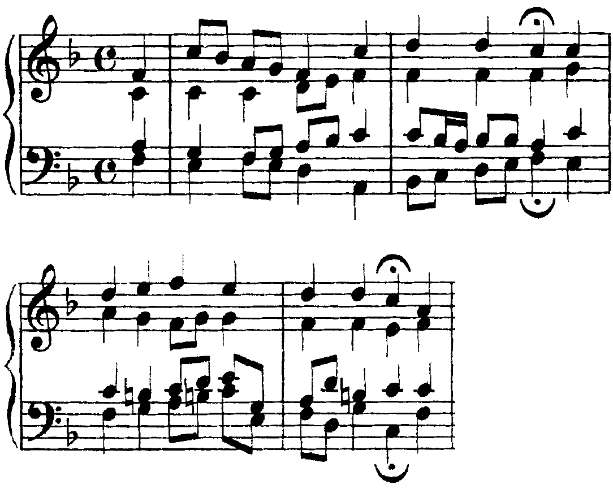

Un giro armonico a quattro voci, cantato una voce per gruppo; la voce di contralto letta dalla sua chiave.
Ogni parte può muoversi solo quando deve muoversi, e allora farà il movimento più piccolo possibile.
Arnold Schönberg, citato da Carlo Marenco, Manuale d’armonia, p. 22
B8Cantiamo con la sottodominante, pp. 176–177 · C9Il rigo di contralto, pp. 294–295
Sezione B, unità 8, lezione 27: i giri si cantano a voci divise. Il libro non ha giri a quattro voci con la 6/4.
Un giro armonico è una breve successione di accordi che conduce dalla tonica a una cadenza e si può ripetere. Cantato a quattro voci, ogni voce segue la «legge del più corto cammino»: «la voce che ha il suono in comune rimane legata», l’altra «raggiunge per la via più breve il suono più vicino» dell’accordo seguente (Marenco, Manuale d’armonia, p. 22).
Quattro gruppi. Ciascun gruppo canta la sua voce con il pianoforte che suona le altre tre; poi tutti insieme con il pianoforte; poi senza, con la sola tonica data all’inizio. Due giri, poi si ruota di una voce.
La nota tenuta: il sol del contralto resta fermo dalla b. 2 alla b. 4 e scivola in basso; va ripreso a ogni cambio d’accordo. La sensibile: il fa♯ delle bb. 2, 4 e 6 si canta alto, appoggiato al sol che segue.
La chiave di contralto è la chiave di do sulla terza riga: la terza riga è il do centrale (do₃). È la chiave in cui le voci medie si scrivono senza tagli; oggi resta alla viola (libro, C9, pp. 294–295).
Prima parlato, con il nome delle note, in tempo; poi cantato da tutta la classe mentre il pianoforte suona soprano, tenore e basso. Al secondo giro canta solo il gruppo dei contralti.
Leggere la nota un grado sotto, come se il rigo fosse in chiave di violino: la terza riga è il do, non il si. Il riferimento si prende dal do della terza riga e dal sol che sta nel secondo spazio dall’alto.
Nel corale che chiude la cantata «Wie schön leuchtet der Morgenstern» (U4 L2) le voci interne si muovono quasi sempre per grado o restano ferme. Il contralto tiene il do per due movimenti e sale re–fa (b. 1); tiene il si♭ e scende al la (b. 2); alla b. 3 sale si♭–do–re, torna al do e scende di quarta al sol. Il basso porta i salti, le voci interne il movimento più piccolo.

Si ascoltano le bb. 0–4 seguendo il contralto in chiave di contralto. Poi metà classe canta il contralto e metà il basso, con la registrazione a volume basso; al terzo ascolto senza registrazione, con la sola tonica.
Ogni voce tiene la nota comune e va al suono più vicino. Il basso porta i salti; le voci interne quasi non si muovono.
Sulla nota tenuta, che va ripresa a ogni cambio, e sulla sensibile, che si canta appoggiata alla tonica.
Do centrale sulla terza riga. Si legge dal do, e non come la chiave di violino.
Mercoledì 2/12, ora 30: la V2, che chiude l’UdA 4. La lezione si chiude con il solfeggio parlato, cantato e ritmico.
Compiti per la prossima volta
Realizza il basso a quattro parti.
Sul quaderno, a matita. La foto del lavoro finito va su Classroom. Nel Workbook: apri l’esercizio 4.38 ↗
Compiti per la prossima volta
n. 303 e n. 304 parlato · n. 305 endecalineo · n. 306 e n. 307 cantato · n. 308 e n. 309 ritmico
Ogni pezzo a tempo, senza fermarti: il parlato a nomi, il cantato prendendo il primo suono dalla tastiera, il ritmico battendo la pulsazione.
Scrivi la melodia sul quaderno, in chiave di violino: otto battute in 3/4, do maggiore. Il primo suono è mi. Prima il riferimento, poi tutto due volte, ogni coppia di battute due volte, il collegamento 1–4, 3–6 e 5–8, e tutto per controllare.
Il riferimento: accordo di tonica e primo suono
Il dettato · otto battute
Le sezioni (riferimento, tutto, le coppie, il collegamento) si ascoltano una per una e si ripetono quanto serve; le fasi fanno la procedura della classe, con gli annunci e le pause, da qualunque punto.
Sul quaderno scrivi in testa la sigla C2-D-U04-L8. Si corregge all’inizio della prossima lezione.
Compiti per la prossima volta
Scrivi un contrappunto di prima specie (nota contro nota) sotto il canto fermo, in modo misolidio (finale sol): otto battute. Comincia su una consonanza perfetta, alla cadenza la sensibile sale alla finale, niente quinte e ottave consecutive.
Sul quaderno, con la sigla C2-CP-U04-L8 in testa; la foto va su Classroom.
Scritto: Un basso numerato di otto battute (Workbook, esercizio 4.38), sul quaderno; la foto va su Classroom. Solfeggio dal quaderno di lettura: parlato n. 303, 304; endecalineo n. 305; cantato n. 306, 307; ritmico n. 308, 309 (a tempo, senza fermarsi). Dettato C2-D-U04-L8 dalla pagina della lezione (sezioni da ascoltare, o le fasi della procedura guidata), sul quaderno con la sigla. Contrappunto di prima specie sul canto fermo (C2-CP-U04-L8).
In classe
A nomi, a tempo, con la mano che batte. Chi si ferma riparte dalla battuta dopo.
Apri il n. 298 nel quaderno di lettura ↗ chiave di contralto · 4/4
In classe
A nomi, a tempo, sul doppio rigo: prima si trovano con gli occhi i passaggi da una chiave all’altra.
In classe
Si prende il tono dalla tastiera, si canta insieme; poi a gruppi.
Apri il n. 300 nel quaderno di lettura ↗ chiave di violino · 4/4 · fa maggiore
Apri il n. 301 nel quaderno di lettura ↗ chiave di violino · 3/4 · sol maggiore
In classe
Tutti insieme, battendo la pulsazione. Poi a file, due battute a testa.
In classe
Soprano e basso sono dati, con la cifratura. 1. Scrivi il contralto su un rigo a parte, in chiave di contralto. 2. Scrivi il tenore sul rigo di basso. 3. Controlla parallele, sensibile e raddoppi; poi canta il contralto a mezza voce, dalla chiave di contralto.
Dieci minuti sul quaderno, poi si confronta alla lavagna.